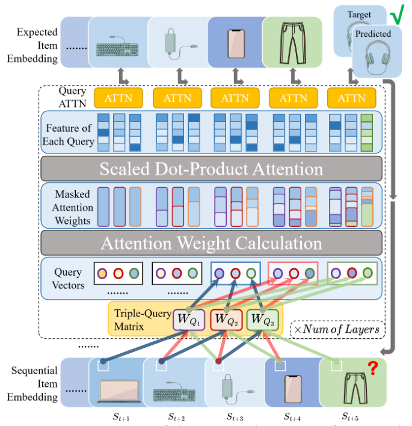

Multi-Item-Query Attention for Stable Sequential Recommendation (面向稳定序列推荐的多物品查询注意力)
- 会议/期刊: CIKM 2025
- 作者与机构: Mingshi Xu, Haoren Zhu, Wilfred Siu Hung Ng（香港科技大学）
- 推荐链路定位: 召回（Next-Item 序列建模）
- 研究方向: 序列与会话推荐 / 自监督与交互去噪
- 论文原文: https://arxiv.org/abs/2509.24424v1
- 开源代码: https://github.com/mxuax/MQ-Attn2025
TL;DR (1分钟核心速览)
针对序列推荐中掩码注意力仅用最近一个物品生成 Query、对交互噪声高度敏感的问题，本文提出 MIQ-Attn：从最近 \(m\)个物品（含虚拟物品）经查询窗口矩阵生成\(m\) 个多样化 Query，再做 Query 级注意力聚合。作为即插即用替换件，在 Leave-One-Out + Full-Ranking 协议下，ML-1M 上 SASRec 的 HR@5 从 0.0850 提升至 0.1030（+21.2%），LastFM 上 S3Rec 变体取得 SOTA（HR@5 +25.5%）。
Background & Motivation (背景与核心矛盾)
- 主流范式: SASRec/BERT4Rec 类模型以因果掩码自注意力聚合历史，但 Query 向量始终由序列末位物品投影得到，输出高度依赖单一交互点。
- 前人局限: ① 末位物品若为误点击/噪声，Query 即被污染，预测剧烈偏移（图 1 所示偏差）；② 长序列中用户兴趣多面性被压缩为单点表征，早期信号无法进入 Query 通道。
- 核心洞察 (Key Insight): 注意力层虽"看到"全序列，但 Query 生成路径是信息瓶颈——把 Query 从单点扩展为窗口内多点，即可在不改主干的前提下分散噪声影响。
- 本文切入点: 用最近 \(m\) 个物品 + 虚拟物品构造多 Query，并以 Query 级注意力自适应加权，实现"去单点依赖"的稳定预测。
Method (核心方法设计)
1. 整体框架 (Overall Architecture)
输入用户交互序列，在序列头部拼接 \(m-1\)个可学习虚拟物品\(d_i\)以对齐窗口；对每个时间步取长度\(m\)的查询窗口，经\(m\)个独立投影矩阵\(W^{q_j}\)生成\(m\)个 Query，各自执行标准掩码注意力得到\(m\)个输出向量；再以 Query 级注意力聚合为单一表征\(F_{agg}\)，最后与物品嵌入内积打分、softmax 预测下一物品。训练沿用 SASRec 的交叉熵 + 全库负采样，推理时仅需一次前向。
flowchart TD
A["交互序列 + m-1 个虚拟物品"] --> B["查询窗口 (最近 m 个物品)"]
B --> C["查询窗口矩阵 W^Q: 生成 m 个 Query"]
C --> D["m 路掩码自注意力 → m 个输出向量"]
D --> E["Query 级注意力聚合 F_agg"]
E --> F["内积打分 / Next-Item 预测"]
2. 关键设计拆解 (Key Designs)
-
虚拟物品 + 查询窗口构造（解决序列头部无历史可查）：若直接取最近 \(m\)项，序列前\(m-1\) 步窗口不足。作者在序列前拼接可学习虚拟物品（类比 BERT 的
[CLS]/padding），使首部物品与后部物品获得同等 Query 上下文： \(S_{q,t,i}=\{d_t,\dots,d_{m-1},s^i_1,\dots,s^i_t\}\ (t<m),\quad \{s^i_{t-m},\dots,s^i_t\}\ (m\le t<T_i)\)。 相比零填充或复制首物品，虚拟物品提供可学习语义先验，缓解冷启动位置的表征塌缩。 -
查询窗口矩阵 QWM（让每个 Query 关注不同兴趣面）：直接复用原始嵌入作 Query 会导致 \(m\)个 Query 高度同质。QWM 为窗口内每个位置配置独立投影\(W^{q_j}\in\mathbb{R}^{d\times d}\)，\(q_j=\hat{E}W^{q_j}\)，使各 Query 捕获不同时间片段/兴趣维度，等效于"在 Query 侧做多头"，但头数与窗口位置一一绑定。
-
Query 级注意力与训练目标：\(m\)个输出简单平均会稀释可靠 Query。以输出堆叠\(O_{agg}\) 再做一层注意力： \(\alpha_j=\mathrm{softmax}_j\big((O_{agg}W^K)(o_jW^Q)^\top/\sqrt{d_k}\big),\quad F_{agg}=\sum_{j=1}^{m}\alpha_j(o_jW^V)\)。 总损失即标准下一物品交叉熵 \(\mathcal{L}=-\sum\log\hat{y}_{s_{T+1}}\)，负采样采用全库未交互物品（full-corpus），无额外对比/去噪损失。复杂度由\(O(T^2d)\)增至\(O(mT^2d+m^2Td)\)，空间\(O(d^2)\to O(md^2)\)，因\(m\ll T\)且\(md^2\ll|I|d\)，开销可忽略。
Experimental Setup & Evaluation Protocol (实验设置与评估协议)
- 数据集与预处理:
| 数据集 | #Users | #Items | #Interactions | 平均长度/用户 | 特征/场景说明 |
|---|---|---|---|---|---|
| Amazon Beauty | 52,024 | 57,289 | 0.4M | 7.6 | 稀疏短序列，美妆评论 |
| MovieLens-1M | 6,040 | 3,416 | 1.0M | 163.5 | 长序列，电影评分 |
| LastFM | 1,090 | 3,646 | 52,551 | 48.2 | 音乐社交，含辅助特征 |
- 数据划分与防穿越 (Splitting Strategy):
Leave-One-Out——末位为测试、倒数第二位为验证、其余训练；Beauty/ML-1M 沿用 SASRec 配置，LastFM 沿用 S3Rec 配置。 - 排名评测协议 (Ranking Protocol): 无偏
Full-Ranking（全部未交互物品作负样本），指标 HR@{5,10,20} 与 NDCG@{5,10,20}。 - 对比基线与超参设置: GRU4Rec\(_F\)、SRGNN\(_F\)、SASRec\(_F\)、S\(^3\)Rec（含预训练变体）；嵌入维度随\(m\)调整（图 3 显示最优维度随\(m\)增大而增大），dropout 同步调参；\(p<0.05\)显著性检验（LastFM 表以\(*\) 标注）。
Key Experimental Results (实验关键数据)
1. 主实验对比 (Main Results)
Beauty / ML-1M 上 SASRec 与 MIQ-Attn 对比（节选核心列）：
| 数据集 | 模型 | HR@5 | NDCG@5 | HR@10 | NDCG@10 | HR@20 | NDCG@20 |
|---|---|---|---|---|---|---|---|
| Beauty | SASRec | 0.0165 | 0.0093 | 0.0267 | 0.0125 | 0.0412 | 0.0162 |
| Beauty | MIQ-Attn\(_2\) | 0.0175 | 0.0096 | 0.0258 | 0.0123 | 0.0402 | 0.0160 |
| Beauty | MIQ-Attn\(_3\) | 0.0123 | 0.0066 | 0.0246 | 0.0104 | 0.0494 | 0.0167 |
| Beauty | MIQ-Attn\(_{10}\) | 0.0021 | 0.0010 | 0.0021 | 0.0010 | 0.0052 | 0.0018 |
| ML-1M | SASRec | 0.0850 | 0.0508 | 0.1570 | 0.0739 | 0.2610 | 0.0999 |
| ML-1M | MIQ-Attn\(_3\) | 0.0910 | 0.0451 | 0.1610 | 0.0677 | 0.2770 | 0.0967 |
| ML-1M | MIQ-Attn\(_5\) | 0.0880 | 0.0453 | 0.1780 | 0.0742 | 0.2740 | 0.0984 |
| ML-1M | MIQ-Attn\(_{10}\) | 0.1030 | 0.0515 | 0.1790 | 0.0759 | 0.2910 | 0.1041 |
| ML-1M | MIQ-Attn\(_{15}\) | 0.0960 | 0.0471 | 0.1660 | 0.0692 | 0.2590 | 0.0926 |
LastFM 上跨模型验证（\(m=5\)）：
| 类型 | 模型 | HR@5 | NDCG@5 | HR@10 | NDCG@10 | HR@20 | NDCG@20 |
|---|---|---|---|---|---|---|---|
| Type1 | SASRec\(_F\) | 0.0303 | 0.0161 | 0.0486 | 0.0221 | 0.0826 | 0.0305 |
| Type1 | MIQ-Attn\(_{SASRec_F}\) | 0.0376 | 0.0194 | 0.0578 | 0.0261 | 0.0881 | 0.0337 |
| Type2 | S\(^3\)Rec\(_F\) | 0.0431 | 0.0250 | 0.0743 | 0.0349 | 0.1266 | 0.0481 |
| Type2 | MIQ-Attn\(_{S^3Rec_F}\) | 0.0541 | 0.0365 | 0.0844 | 0.0459 | 0.1294 | 0.0572 |
MIQ-Attn\(_{SASRec_F}\)相对 SASRec\(_F\)：HR@5 +24.09%、NDCG@5 +20.50%、HR@10 +18.93%（均显著）；MIQ-Attn\(_{S^3Rec_F}\)相对 S\(^3\)Rec\(_F\)：HR@5 +25.52%、NDCG@5 +38.26%，为 LastFM 新 SOTA。
2. 消融实验 (Ablation Study)
原文未设独立消融表，但通过 \(m\) 扫描与组件替换构成等效消融：
| 配置 | ML-1M HR@5 | ML-1M NDCG@20 | 说明 |
|---|---|---|---|
| SASRec（单 Query 基线） | 0.0850 | 0.0999 | 无 QWM、无虚拟物品 |
| MIQ-Attn \(m=3\) | 0.0910 | 0.0967 | 窗口过小，增益有限 |
| MIQ-Attn \(m=5\) | 0.0880 | 0.0984 | 中等窗口 |
| MIQ-Attn \(m=10\) | 0.1030 | 0.1041 | 最优，约为平均长度 1/10 |
| MIQ-Attn \(m=15\) | 0.0960 | 0.0926 | 窗口过大，虚拟物品占比过高 |
| Beauty \(m=10\)（平均长度 7.6） | 0.0021 | 0.0018 | 窗口超序列长度，性能崩塌 |
3. 关键实验发现 (Key Findings)
- 窗口 \(m\)与平均序列长度强耦合：ML-1M 平均长度 163.5，最优\(m=10\)（约 1/10 平均长度），HR@5 提升 21.2%；Beauty 平均长度仅 7.6，\(m=10\) 时 HR@5 从 0.0165 崩至 0.0021，说明虚拟物品在短序列中反客为主、淹没真实信号。
- 长序列场景收益最大、短序列收益不稳：ML-1M 全指标一致提升，Beauty 仅 \(m=2/3\) 在部分指标微增（HR@5 +6.1%），NDCG@10 反而下降，验证"多 Query 分散噪声"依赖足够长的历史支撑。
- 即插即用性成立：同一机制在 SASRec 与 S\(^3\)Rec 两类架构上分别带来 +24.09% 与 +25.52% 的 HR@5 相对提升，且图 3 显示最优嵌入维度随\(m\) 同步增大，提示窗口与表征容量需联合调参。
Highlights & Limitations (亮点、对比与审稿批判)
- 与代表作对比 (vs. Prior Work): 与 SASRec 的本质差异在 Query 生成路径（单点 → 窗口多点 + QWM），而非注意力聚合方式；与 LLM 中的 Multi-Query/Grouped-Query Attention 动机相反——后者为省显存/提速，本文为抗噪与稳定，且引入虚拟物品与 Query 级聚合，机制不同。
- 可迁移亮点: ① 虚拟物品作为"可学习位置先验"可迁移到任何定长窗口的序列建模；② Query 级注意力加权可替代简单平均，用于多表征融合（如多兴趣召回）。
- 审稿级局限批判: ① 增益高度依赖 \(m\)与序列长度比例，Beauty 上出现性能崩塌，缺乏自适应\(m\)选择机制（作者亦列为未来工作）；② 空间从\(O(d^2)\)增至\(O(md^2)\)，且未报告训练/推理时延实测与显著性检验在 Beauty/ML-1M 上的完整结果，评估说服力略弱。
Rating (四维评分)
- 方法创新性 (Novelty): ⭐⭐⭐ （Query 侧多窗口 + 虚拟物品思路简洁有效，但本质是注意力变体工程，理论分析仅停留在复杂度层面）
- 评估协议与实验扎实度 (Protocol & Experiments): ⭐⭐⭐ （Full-Ranking + Leave-One-Out 规范，三数据集跨架构验证，但缺独立消融表与 Beauty 上的显著性检验）
- 写作与数学规范度 (Clarity & Rigor): ⭐⭐⭐⭐ （公式与符号定义清晰，复杂度分析完整，动机图直观）
- 工业落地与复现价值 (Industrial & Practical Value): ⭐⭐⭐⭐ （drop-in 替换、代码开源、额外开销可控，但需按序列长度调 \(m\) 增加调参成本）